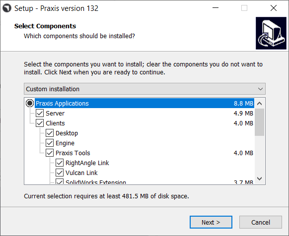
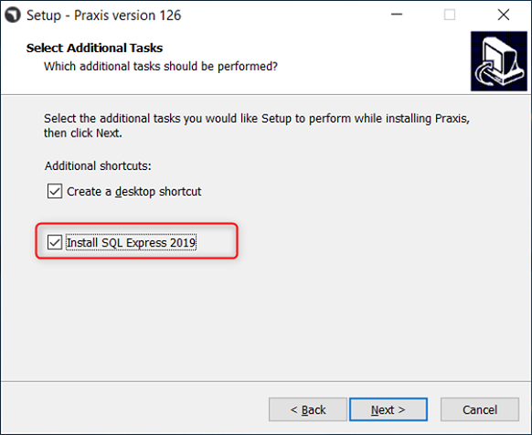
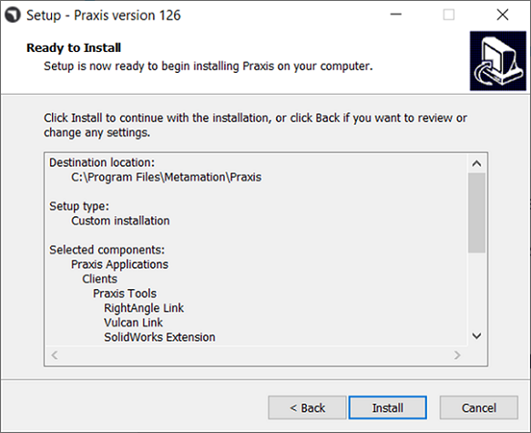
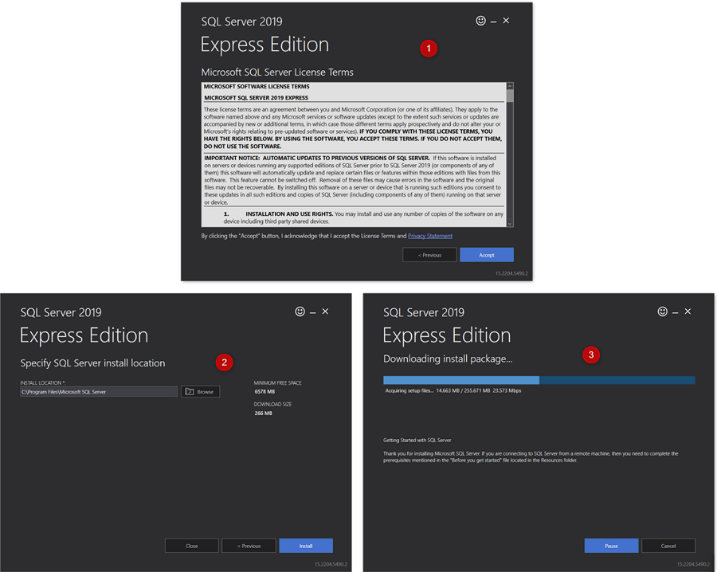
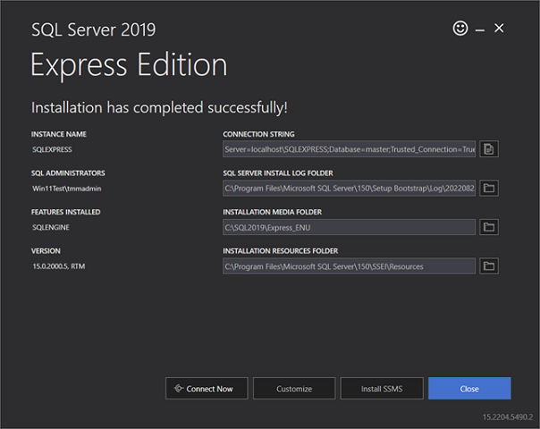
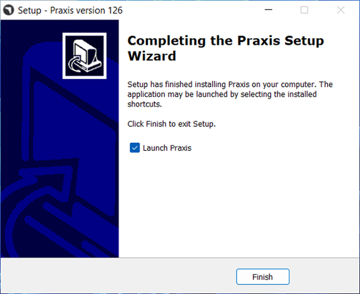
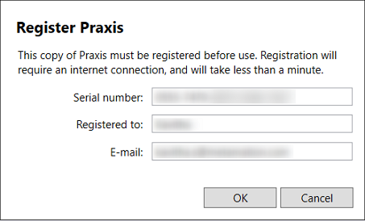
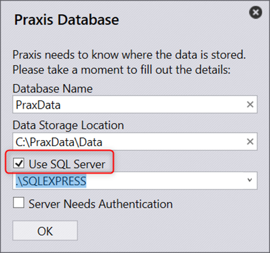
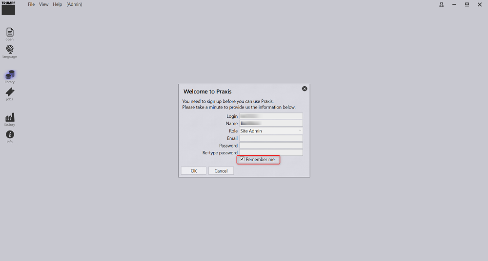
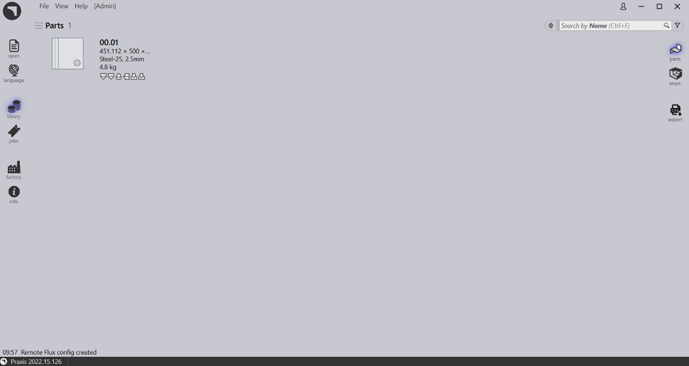

Praxis is a distributed, Server/Client application. Select Full installation option on the components selection page to perform the first install.

Check ON Install SQL Express 2019 while installing Praxis on a new machine. This is necessary only for the first time and can be ignored thereafter.

Note: SQL Express 2019 installation is needed only for the Server. This option is not available for Client and Sync Installations.
Click Install to begin the Installation.

Once Praxis components are installed, the installer proceeds with the SQL server installation. Accept the License Agreement to proceed and install SQL express with the default options.

Once the installation is completed Click Close and complete the installation.

Depending on the Windows version, closing the SQL installation may prompt a restart. After the Restart, launch Praxis to register the license and complete the installation.

Provide the appropriate Serial key and credentials to Register Praxis.

Check ON Use SQL Server and select the SQL server name to connect to the Database.

Once connected, Welcome screen is seen with login credentials. Confirm the credentials and Click OK. Check-ON Remember me to save the credentials for future reference.

Upload(Open --> Import) a new Part from the C:\Program Files\Metamation\Praxis\Samples\Parts and verify if the Part is imported successfully.
